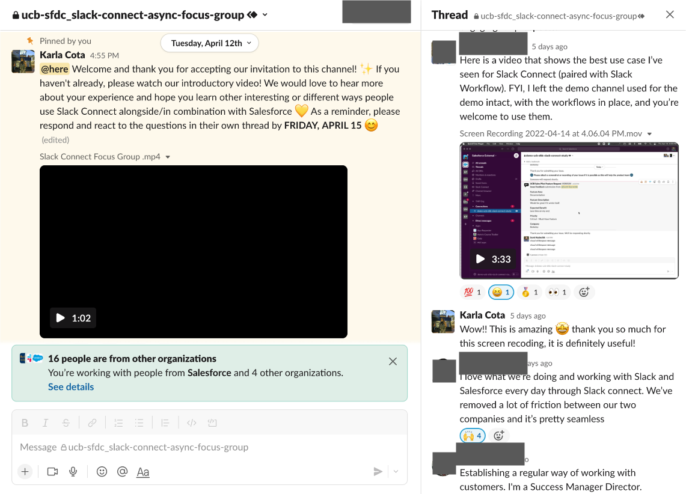

Problem
Salesforce wants to have something that makes their products play nicely together” to let their customers easily integrate Salesforce’s services. In this project, we want to seek for the opportunity of making Slack Connect become the glue that holds all Salesforce’s products together.
What is Slack Connect?
Slack Connect is a built-in function in Slack that allows Slack users to work with people outside their company in channels and DMs. By moving conversations out of emails, users can work securely and collaboratively with partners, vendors, or customers”

3 Research Questions
- JTBD : For what “jobs” are our customers currently using Slack Connect alongside Salesforce’s products?
- Pain Points : Where has Slack Connect struggled to be successful?
- Opportunities : What are the Salesforce use cases that could be made better by Slack Connect?
Methods
In this study, we used 3 research methods to address our research questions, including desk research, interview, and focus group.
-
Participants
We recruited 10 participants who meet certain criteria
- are Salesforce employees
- use Slack Connect at least weekly
- use Salesforce products at least weekly
- spanning across different business line (product development, IT, marketing, sales)
- spanning across different years of working experiences (1 < 10 years, 4 between 10 to 19 years, 5 between 20 to 29 years)
-
Desk Research
We first conducted desk research to get a better understanding of Slack Connect and its strengths and weaknesses. We did a comparative analysis on Slack Connect and other communication tools such as text, email, microsoft team, and google chat.
-
Interview
Interview is where we dived deep into the use cases of Slack Connect & Salesforce products. Each 45-minutes interview were semi-structured and included 5 pre-designed questions, which are all designed to address the 2 main interview objectives (a) How do our users currently use Slack Connect? (b) What is their experience with Slack Connect alongside other Salesforce products?
-
Async Focus Group
We conducted a focus group to foster conversation between different users. We anticipated the conversation between users could brainstorm some possible opportunity areas for Slack Connect. Given the time constraints, we took advantage of Slack Connect as a platform to conduct an async focus group. That is, we invite 7 out of our 10 interviewees to join a Slack Connect channel to discuss by texting. In the channel, we posted questions and emoji reactions to foster back-and-forth communication. The async focus group took 3 days.

Analysis
-
Desk Research
In the desk research, we try to get some insights on why Slack Connect might be better than other products and vice versa. We put the five products together to analyzed what the strength, weakness, and uniqueness of Slack Connect are.

-
Interview & Focus Group
We analyzed the data from our interviews and focus groups together. We listed down the findings from the interview transcripts and focus group answers, and then we classified these findings into groups in Figjam.

Our Main Finding
Slack Connect users face challenges when using it alongside the company’s other internal tools. This is because they often need to manually move data back and forth between the two tools (e.g., transmitting information communicated in Slack Connect into Quip), leading to low efficiency, time wastage, and repeated data.
“There isn't an outside of just copy and pasting links, there's not an easy way to pull Salesforce information into Slack or associate a Slack thread or convo back into Salesforce. They are 2 ships sailing the same direction but separate, instead of them being bonded into one”
More Findings
-
JTBD of Slack Connect along with Salesforce Products
- Build successful products/apps
- Easily manage projects and teams (ex. assign tasks, track status, give updates)
- Quickly arrange meetings
- Quickly make requests & approvals
- Gather insightful customer feedback for product improvements
- Effectively and securely communicate with customers, global teams, people across different organizations, stockholders, partners, etc
-
Some Foundational Findings about Slack Connect
- Slack can be overwhelming: too many channels to track, “messy” side bar where Slack Connect-specific channels can get lost, hard to find info through the search bar, no time to read tips, lots of notifications, easy to miss comments within threads
- Adoption rate: it is difficult to get outsiders to use Slack Connect (given that it is a relatively new product and has a subscription cost)
- Transparency issue: It is difficult to see the process after someone gets an invite to a Slack Channel (ex “Have they accepted the invitation?”)
Design Recommendations
-
Automated workflow
To replace the manual and repeated work, we suggest an automated workflow such as having a workflow and bot in slack or an app that will allow you to put your market request directly -
Hierarchical information architecture
To ease Slack’s overwhelmingness, we recommend designing an interface system that lists urgent or important content in a hierarchy. Specifically, we recommend an easier way if pinner channels (e.g favorites, prioritization, inboxes). -
Transparenct invitation process
To increase the transparency of Slack Connect’s invitation process, we recommend to redesign or teach users the current invitation process’s UI to allow an inviter to more easily see the status of an invite